Project Summary:
I've wanted a project car since I got my learner's permit at 15 years old. Here's the journey!
First, a quick backstory on why this car specifically. Back in the 80s, my grandfather bought a 72 Triumph TR6. He wasn't much of a car guy and didn't drive it much; however, my mom loved the car. My grandfather ended up giving my mom the car to drive while in college. After staying up late to study over a long weekend, my mom had to make the drive back to her university. While driving, a combination of factors led to her falling asleep at the wheel and flipping the car multiple times on the highway. The paramedics thought she was dead, but because she is so short, the roll bar saved her. So yeah, I bought the same car :)
1. Buying the Car
01/07/2025 - Found the car on Facebook Marketplace. Had been sitting under a quadraplex for ~20 years. After the car passed my "inspection", I made an offer and he accepted. Towed the car back to UCF.
2. Initial Damage
The most obvious damage present on the car after purchase was this large patch of rust by the fuse box & master cylinder. Guy I bought it from said there was a bird's nest? In any case, I took all of the hardware off, then sanded, primed, and painted. The rust had pitted most of the metal, but I decided to leave it for a later date to focus on getting the car running.
Got the car cranking after checking connections on the fuse box and putting a new battery in. Quick compression test showed good numbers.
3. Carburetors
To figure out where to start, I considered the core functions required to run an engine: Air, fuel, spark, compression, and timing. Compression was tested earlier, so I moved on to air & fuel.
The carbs were caked in dirt and old fuel. Disassembled the carb, cleaned with a brass wire brush and carb cleaner, replaced all gaskets, and reassembled. They are not as shiny as they could be, but they are bound to get dirty again, so why waste time.
4. Intake and Exhaust Manifolds
As part of the general refresh, I decided it would be of benefit to my future self to replace intake and exhaust manifold studs. After taking the manifolds off the studs, as expected, were gummed up and stuck. After cleaning the mating surface with a plastic razor blade, I fit the new studs and gasket. Later, cleaned up the manifolds with degreaser and a brass wire brush.
5. Zinc Plating Hardware
As I got deep into tearing the car down, I quickly realized all of the hardware on this fine automobile is fine-threaded imperial bolts... As this hardware is not easily accessible at hardware stores, I decided to save the cost and reuse the existing hardware.
To have a bit of fun and ease the worry of reusing rusty bolts, I threw together a quick zinc electroplating solution with materials available at local stores. One of the first bolts being plated can be seen in. Other plated parts are shown below (oil drain plug and brake line flared nut).
6. Distributor and Ignition Coil
01/28/25 - After a failed start attempt, I realized I was a bit naive to think a car sitting for 20 years would start on the old ignition system. So, here I am refreshing the distributor and replacing the ignition coil.
Took the first picture of the car with the original white wall tires on, man, it looks good. Began by removing the old distributor, the points, along with everything else, were covered in rust or dirt. Got the new ignition coil, plug wires, and distributor parts in and assembled.
Finally, after resetting the engine timing and getting the distributor back in, I thought it was going to start. After multiple failed attempts, I admitted defeat at ~6 am.
7. Brake and Clutch Master Cylinder
Need a win after the multiple failed start attempts, so I took 2 days to rebuild the brake master and clutch cylinder. The master cylinder, shown earlier, was not in great condition. The original slave cylinder had its aluminum push rod corroded, boot ripped, etc. Because of this damage, I figured it was best to replace the unit.
After reading many forums online, I decided to attempt a rebuild of the original brake master cylinder. After cleaning and electroplating the original casting, there was still major pitting in the bore. Hindsight is 20-20, but I should have quit while I was ahead and bought a new unit. However, I still went about cleaning the original parts (to the best of my ability) and reassembling the unit.
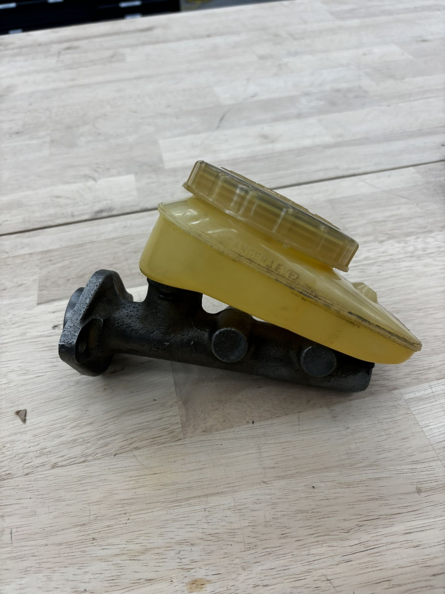 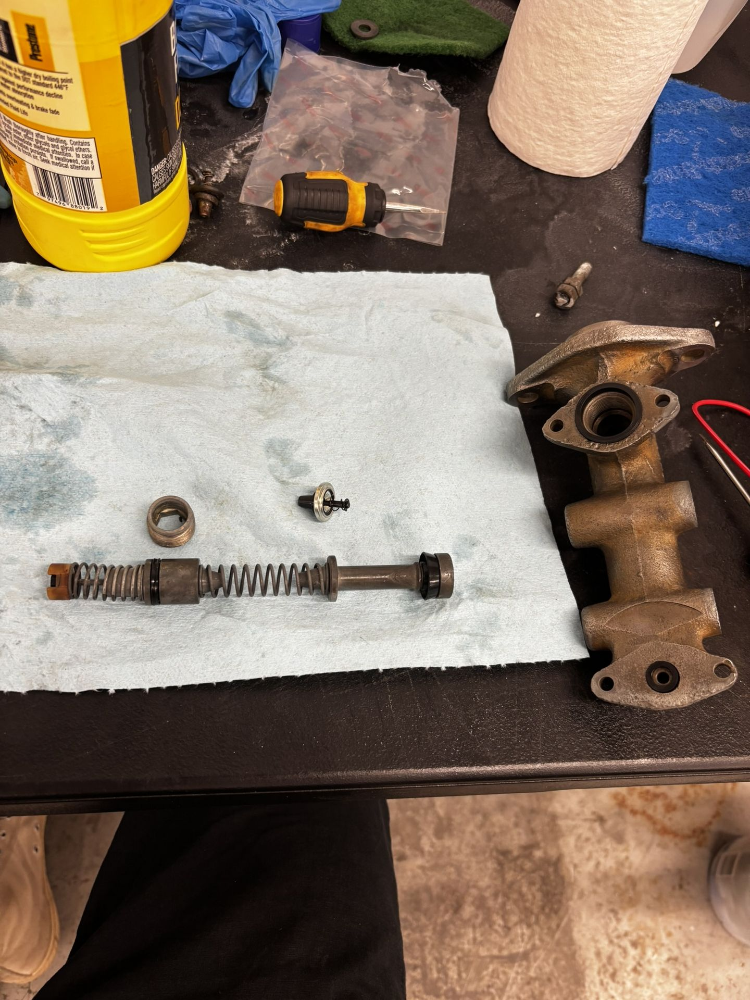Skipping ahead in time a bit, the rebuilt cylinder would not hold pressure, I could not bleed the brakes. I purchased a new unit and switched the fluid reservoir to keep the original patina. Got the new clutch cylinder in and bent the tube to the slave. Unfortunately, I did not capture any photos of bending the brake lines; however, new front brake lines were cut, bent, flared, and installed. The rear lines were cleaned and pressure tested. Finally, the hydraulics in the car were complete, and all systems bled.
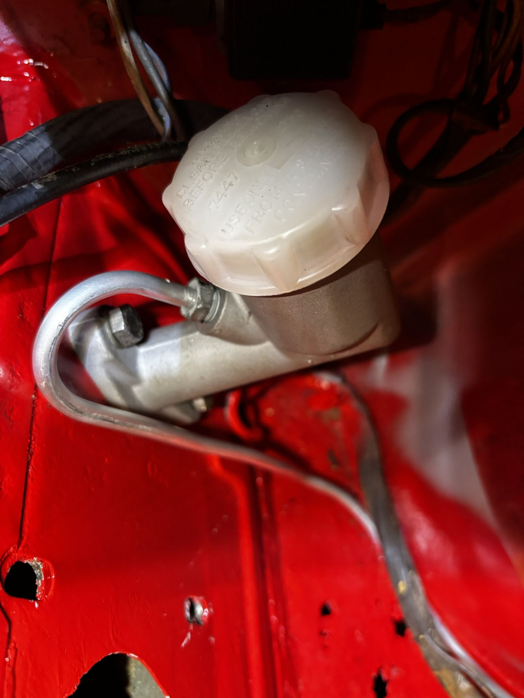 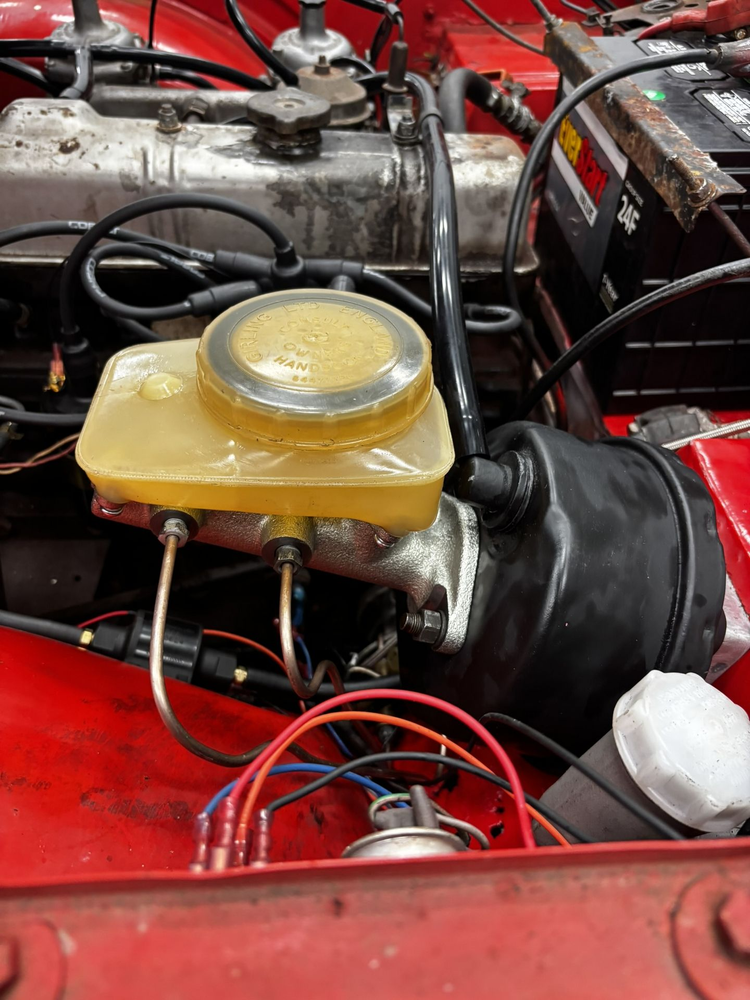 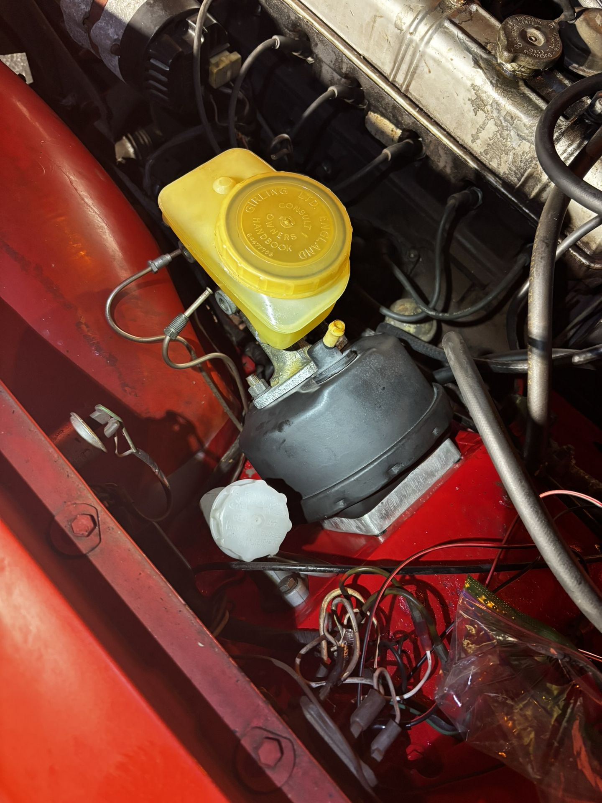8. Brake and Clutch Master Cylinder
So the first 2 months of this "restoration" took place in the parking lot of the research lab I worked at on campus (UCF's Propulsion and Energy Research Laboratory). My co-workers, all being engineers, took an interest in the car as it was hard to miss driving into the parking lot.
On January 30th, 2025, 23 days after purchasing this car, the engine came alive. At the time, I was Plumbing & Electronics lead on the Mach 10 Oblique Detonation (MACH10OD) Flight Experiment.
This week, the Air Force was visiting for a quarterly program status review. At 10:13 pm, I started the car surrounded by my colleagues and Air Force Captains & Majors. Quite the crowd lol.
9. Brake and Clutch Master Cylinder
As with everything else on the car, the brakes were not in great shape. The TR6 has discs in the front and drums in the rear.
Starting with the discs, both calipers had both pistons seized and were covered in dirt. After a lot of back and forth with PB-Blaster & compressed air to free the pistons, everything was organized, cleaned, and re-assembled. Rears followed the same process.
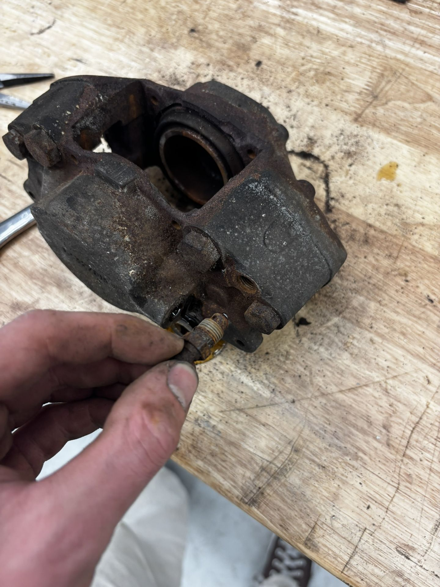 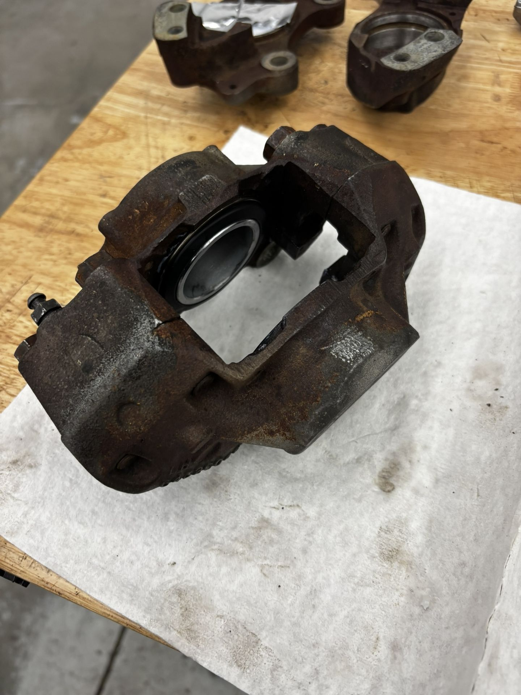 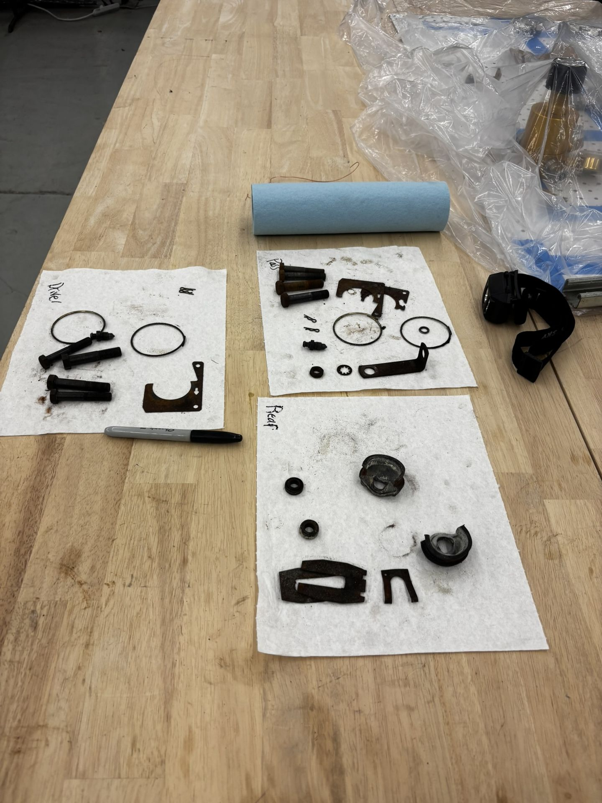Front and rear brakes are complete, as good as new.
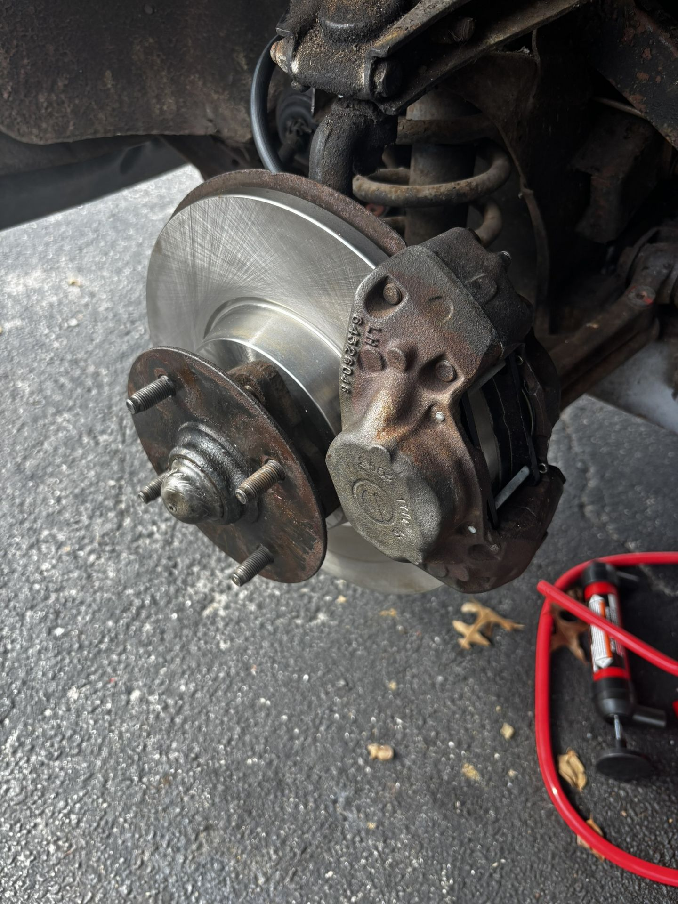 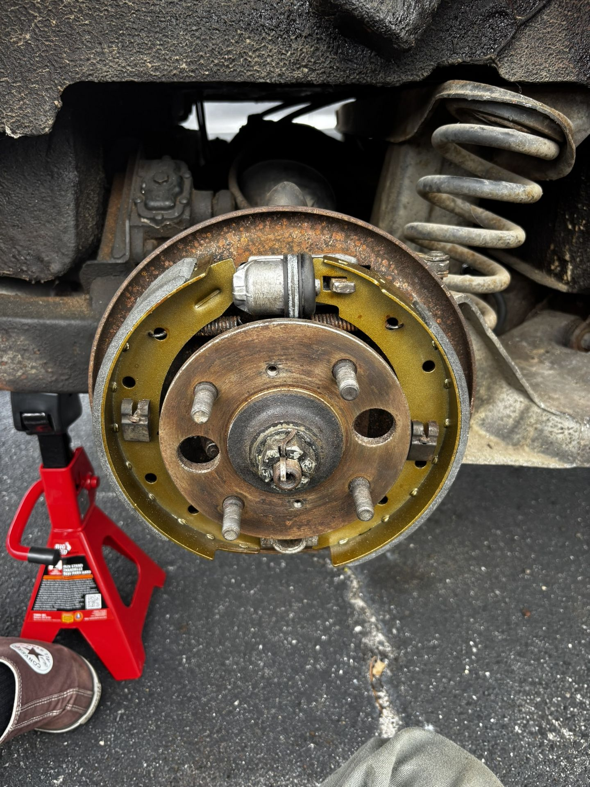10. New Tires
The old white wall tires were dry-rotted and couldn't be safely driven on. Here's me with my new tires.
11. Electric Fuel Pump
2/5/2025 To get the car running under its own power, the last thing to do was install a new fuel pump (along with fixing a few minor electrical issues).
The car comes with a mechanical fuel pump, driven by a cam internal to the engine. It's known to be unreliable, so I figured installing an electric fuel pump would be wise. Riveted the diaphragm pump to a flat on the wheel well, added a relay, and added a fuse to the empty terminal in the fuse box to supply power on ignition.
Once installed, I was finally able to drive the car into its resting spot, instead of pushing it uphill as I had for the past month.
12. Vacuum Lines
2/7/2025 - Getting to the final touches of a fully driving vehicle, it was time to replace all of the vacuum lines. Silicone hoses are both cheaper and superior to the original rubber lines, specifically in longevity, with greater chemical resistance.
The reality of my workspace at times is shown above. All of the work outlined was typically done at night, after a full day of class and work, so below is me at 2 am looking jolly as ever. Replacing all of the lines was a bit tedious, but overall an easy win.
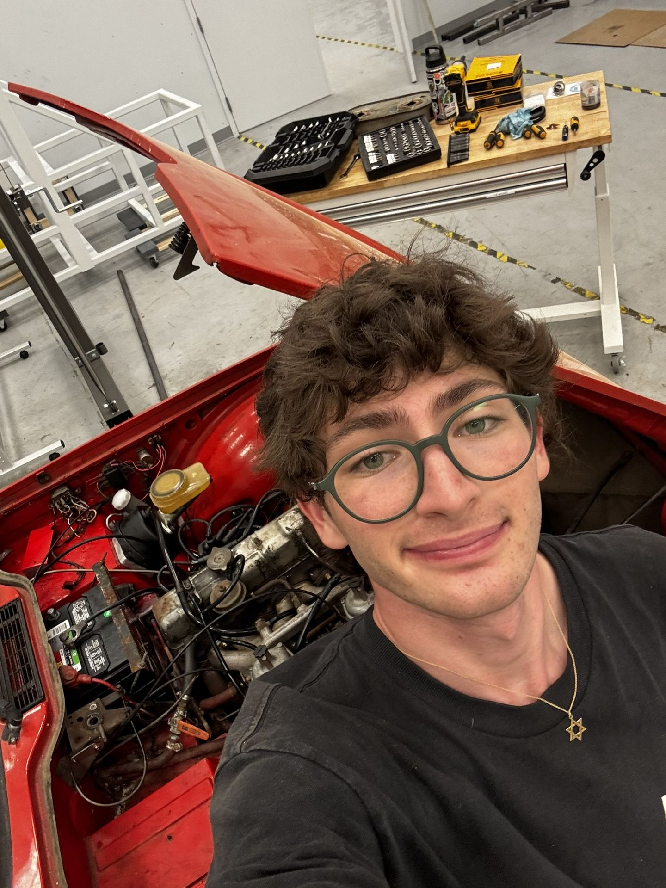13. Coolant Flush
2/7/2025 - The final task before taking the TR6 out onto the streets was getting coolant in the engine. Thankfully, the radiator held fluid. Flushing the block with hose water got rid of the crystallized coolant. After getting new coolant in, I gave the car a quick wash before the maiden voyage.
Two quick videos, the first of which is my documentation of staying up all night and hopefully not foreshadowing disaster. Second is proof of the car getting me home to my apartment complex.
14. Enjoying the Car + Quick jobs
After getting the TR6 driving under its own power, I got it legally registered, and it was legally roadworthy. I spent the remainder of the month driving the car, enjoying it, because why else did I buy it! A couple of quick fixes, such as a new valve cover gasket and polishing the chrome, took place as weekend jobs.
Some pictures throughout 02/2025 & 03/2025 showing the TR6 in action
Also got my mom to drive her old car, she loved it.
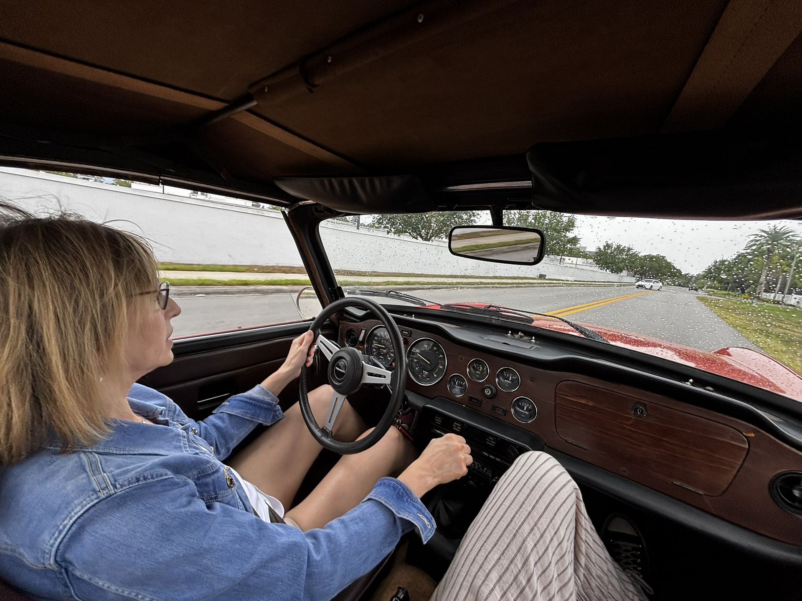